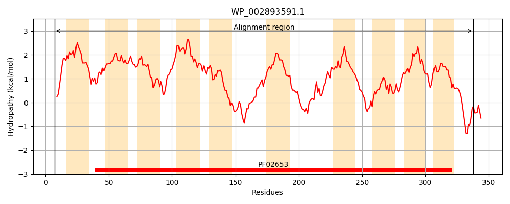
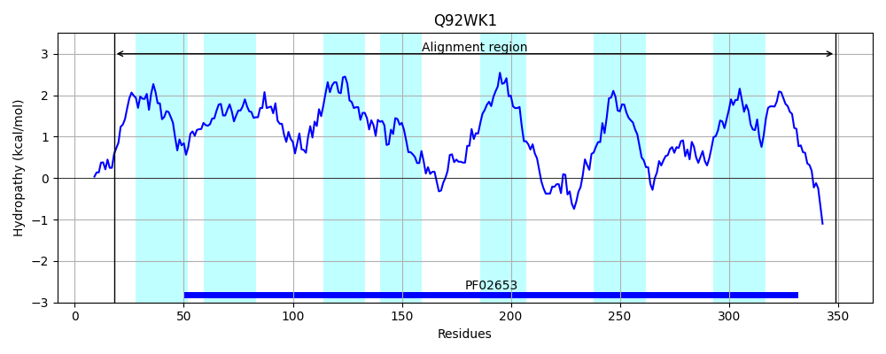
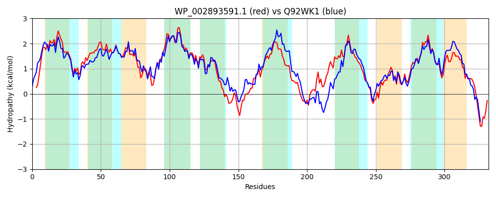

Hit Accession: Q92WK1
Hit TCID: 3.A.1.2.11
Hit Description: gnl|BL_ORD_ID|17247 gnl|TC-DB|Q92WK1|3.A.1.2.11 Probable sugar ABC transporter permease protein - Rhizobium meliloti (Sinorhizobium meliloti).
Mach Len: 332
e:0.000000
Query TMS Count : 10
Hit TMS Count: 7
TMS-Overlap Score: 6.700000
Predicted Substrates:CHEBI:4840;erythritol
BLAST Alignment:
Score: 1005 , Bit scores: 391 bits, E-value: 2.5e-136, Alignment length: 332, Percentage identity: 56
Query: 7 IYMYLLKARTFIALLLVIAFFSVMVPNFLTASNLLIMTQHVAITGLLAIGMTLVILTGGIDLSVGAVAGICGMVAGALLTNGLPLWNGDILFFNVPEVILCVAIFGVLVGLVNGAVITRFGVAPFICTLGMMYVARGSALLFNDGSTYPNLNGMEALGNTGFATLGSGTLLGVYLPIWLMIGFLVLGYWLTTKTPLGRYIYAIGGNESAARLAGVPIVKAKIFVYAFSGLCAAFVGLIVASQLQTAHPMTGNMFEMDAIGATVLGGTALAGGRGRVTGSIIGAFVIVFLADGMVMMGVSDFWQMVIKGVVIVTAVVVDQFQQKLQSKVILMR 338
+ + L+K RTFIAL V+AFFS+ PNFL+ +NL++M++HVA+ LA+GMT VI+TGGIDLSVG++ G+CGMVAG L+ NG+ L G ++FNV EV L G+++G VNG +IT+ VAPFI TLG +YVARG ALL + G T+PNL G L TGFA LGSG LLG+ + IW++I + ++ TP+GR+I+A+GGNE AAR++G+ + + K+FVY FSG CAA VGL+++S+L +HP TGN FE++AI A VLGGT+++GGRG + G+IIGAFVI L+DG+VMMG+S FWQMVIKG+VI+ AVVVDQ Q++LQ +V LM+
Sbjct: 18 VLLTLMKLRTFIALFAVVAFFSIFAPNFLSTANLILMSKHVALNAFLAMGMTFVIITGGIDLSVGSIVGLCGMVAGGLILNGIDLQFGYTVYFNVVEVCLITLAVGIVIGAVNGLLITKLNVAPFIATLGTLYVARGFALLSSGGQTFPNLVGKPELATTGFAFLGSGRLLGLPVSIWVLIVVALAAAYVARYTPIGRHIFAVGGNERAARMSGIRVDRVKMFVYMFSGFCAAIVGLVISSELMASHPATGNSFELNAIAAAVLGGTSMSGGRGTIGGTIIGAFVIGILSDGLVMMGISSFWQMVIKGIVIIVAVVVDQAQRRLQQQVTLMQ 349 | Protein Hydropathy Plots: |
|---|
|  |  |
Pairwise Alignment-Hydropathy Plot:
|
|---|
|  |